Chapter 23: Protists¶
Introduction¶
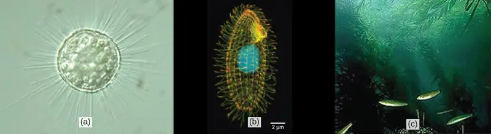
Humans have been familiar with macroscopic organisms (organisms big enough to see with the unaided eye) since before there was a written history, and it is likely that most cultures distinguished between animals and land plants, and most probably included the macroscopic fungi as plants. Therefore, it became an interesting challenge to deal with the world of microorganisms once microscopes were developed a few centuries ago. Many different naming schemes were used over the last couple of centuries, but it has become the most common practice to refer to eukaryotes that are not land plants, animals, or fungi as protists.
This name was first suggested by Ernst Haeckel in the late nineteenth century. It has been applied in many contexts and has been formally used to represent a kingdom-level taxon called Protista. However, many modern systematists (biologists who study the relationships among organisms) are beginning to shy away from the idea of formal ranks such as kingdom and phylum. Instead, they are naming taxa as groups of organisms thought to include all the descendants of a last common ancestor (monophyletic group). During the past two decades, the field of molecular genetics has demonstrated that some protists are more related to animals, plants, or fungi than they are to other protists. Therefore, not including animals, plants, and fungi make the kingdom Protista a paraphyletic group, or one that does not include all descendents of its common ancestor. For this reason, protist lineages originally classified into the kingdom Protista continue to be examined and debated. In the meantime, the term “protist” still is used informally to describe this tremendously diverse group of eukaryotes.
Most protists are microscopic, unicellular organisms that are abundant in soil, freshwater, brackish, and marine environments. They are also common in the digestive tracts of animals and in the vascular tissues of plants. Others invade the cells of other protists, animals, and plants. Not all protists are microscopic. Some have huge, macroscopic cells, such as the plasmodia (giant amoebae) of myxomycete slime molds or the marine green alga Caulerpa, which can have single cells that can be several meters in size. Some protists are multicellular, such as the red, green, and brown seaweeds. It is among the protists that one finds the wealth of ways that organisms can grow.
23.1 Eukaryotic Origins¶
Learning Objectives
By the end of this section, you will be able to do the following:
- List the unifying characteristics of eukaryotes
- Describe what scientists know about the origins of eukaryotes based on the last common ancestor
- Explain the endosymbiotic theory
Organisms are classified into three domains: Archaea, Bacteria, and Eukarya. The first two lineages comprise all prokaryotic cells, and the third contains all eukaryotes. A very sparse fossil record prevents us from determining what the first members of each of these lineages looked like, so it is possible that all the events that led to the last common ancestor of extant eukaryotes will remain unknown. However, comparative biology of extant (living) organisms and the limited fossil record provide some insight into the evolution of Eukarya.
The earliest fossils found appear to be those of domain Bacteria. They are about 3.5 to 3.8 billion years old and are recognizable because of their relatively complex structure and, for prokaryotes, relatively large cells. Most other prokaryotes have small cells, 1 or 2 µm in size, and would be difficult to pick out as fossils. Fossil stromatolites suggest that at least some prokaryotes lived in interactive communities, and evidence from the structure of living eukaryotic cells suggests that it was similar ancestral interactions that gave rise to the eukaryotes. Most living eukaryotes have cells measuring 10 µm or greater. Structures this size, which might be fossilized remains of early eukaryotes, appear in the geological record in deposits dating to about 2.1 billion years ago.
Characteristics of Eukaryotes¶
Data from these fossils, as well as from the study of living genomes, have led comparative biologists to conclude that living eukaryotes are all descendants of a single common ancestor. Mapping the characteristics found in all major groups of eukaryotes reveals that the following characteristics are present in at least some of the members of each major lineage, or during some part of their life cycle, and therefore must have been present in the last common ancestor.
- Cells with nuclei surrounded by a nuclear envelope with nuclear pores: This is the single characteristic that is both necessary and sufficient to define an organism as a eukaryote. All extant eukaryotes have cells with nuclei.
- Mitochondria: Most extant eukaryotes have "typical" mitochondria, although some eukaryotes have very reduced mitochondrial “remnants” and a few lack detectable mitochondria.
- Cytoskeleton of microtubules and microfilaments: Eukaryotic cells possess the structural and motility components called actin microfilaments and microtubules. All extant eukaryotes have these cytoskeletal elements.
- Flagella and cilia: Organelles associated with cell motility. Some extant eukaryotes lack flagella and/or cilia, but their presence in related lineages suggests that they are descended from ancestors that possessed these organelles.
- Chromosomes organized by histones: Each eukaryotic chromosome consists of a linear DNA molecule coiled around basic (alkaline) proteins called histones. The few eukaryotes with chromosomes lacking histones clearly evolved from ancestors that had them.
- Mitosis: A process of nuclear division in which replicated chromosomes are divided and separated using elements of the cytoskeleton. Mitosis is universally present in eukaryotes.
- Sexual reproduction: A meiotic process of nuclear division and genetic recombination unique to eukaryotes. During this process, diploid nuclei at one stage of the life cycle undergo meiosis to yield haploid nuclei, which subsequently fuse together (karyogamy) to create a diploid zygote nucleus.
- Cell walls: It might be reasonable to conclude that the last common ancestor could make cell walls during some stage of its life cycle, simply because cell walls were present in their prokaryote precursors. However, not enough is known about eukaryotes’ cell walls and their development to know how much homology exists between those of prokaryotes and eukaryotes. If the last common ancestor could make cell walls, it is clear that this ability must have been lost in many groups.
Endosymbiosis and the Evolution of Eukaryotes¶
Before we discuss the origins of eukaryotes, it is first important to understand that all extant eukaryotes are likely the descendants of a chimera-like organism that was a composite of a host cell and the cell(s) of an alpha-proteobacterium that “took up residence” inside it. This major theme in the origin of eukaryotes is known as endosymbiosis, one cell engulfing another such that the engulfed cell survives and both cells benefit. Over many generations, a symbiotic relationship can result in two organisms that depend on each other so completely that neither could survive on its own. Endosymbiotic events likely contributed to the origin of the last common ancestor of today’s eukaryotes and to later diversification in certain lineages of eukaryotes (Figure 23.5). Similar endosymbiotic associations are not uncommon in living eukaryotes. Before explaining this further, it is necessary to consider metabolism in prokaryotes.
Prokaryotic Metabolism¶
Many important metabolic processes arose in prokaryotes; however, some of these processes, such as nitrogen fixation, are never found in eukaryotes. The process of aerobic respiration is found in all major lineages of eukaryotes, and it is localized in the mitochondria. Aerobic respiration is also found in many lineages of prokaryotes, but it is not present in all of them, and a great deal of evidence suggests that such anaerobic prokaryotes never carried out aerobic respiration nor did their ancestors.
While today’s atmosphere is about 20 percent molecular oxygen (O2), geological evidence shows that it originally lacked O2. Without oxygen, aerobic respiration would not be expected, and living things would have relied on anaerobic respiration or the process of fermentation instead. At some point between 3.2 and 3.5 billion years ago, some prokaryotes began using energy from sunlight to power anabolic processes that reduce carbon dioxide to form organic compounds. That is, they evolved the ability to photosynthesize. Hydrogen, derived from various sources, was “captured” using light-powered reactions to reduce fixed carbon dioxide in the Calvin cycle. The group of Gram-negative bacteria that gave rise to cyanobacteria used water as the hydrogen source and released O2 as a “waste” product about 2.2 billion years ago.
Eventually, the amount of photosynthetic oxygen built up in some environments to levels that posed a risk to living organisms, since it can damage many organic compounds. Various metabolic processes evolved that protected organisms from oxygen, one of which, aerobic respiration, also generated high levels of ATP. It became widely present among prokaryotes, including in a free-living group we now call alpha-proteobacteria. Organisms that did not acquire aerobic respiration had to remain in oxygen-free environments. Originally, oxygen-rich environments were likely localized around places where cyanobacteria were abundant and active, but by about 2 billion years ago, geological evidence shows that oxygen was building up to higher concentrations in the atmosphere. Oxygen levels similar to today’s levels only arose within the last 700 million years.
Recall that the first fossils that we believe to be eukaryotes date to about 2 billion years old, so they seemed to have evolved and diversified rapidly as oxygen levels were increasing. Also, recall that all extant eukaryotes descended from an ancestor with mitochondria. These organelles were first observed by light microscopists in the late 1800s, where they appeared to be somewhat worm-shaped structures that seemed to be moving around in the cell. Some early observers suggested that they might be bacteria living inside host cells, but these hypotheses remained unknown or rejected in most scientific communities.
Endosymbiotic Theory¶
As cell biology developed in the twentieth century, it became clear that mitochondria were the organelles responsible for producing ATP using aerobic respiration, in which oxygen was the final electron acceptor. In the 1960s, American biologist Lynn Margulis of Boston University developed the endosymbiotic theory, which states that eukaryotes may have been a product of one cell engulfing another, one living within another, and coevolving over time until the separate cells were no longer recognizable as such and shared genetic control of a mutualistic metabolic pathway to produce ATP. In 1967, Margulis introduced new data to support her work on the theory and substantiated her findings through microbiological evidence. Although Margulis’s work initially was met with resistance, this basic component of this once-revolutionary hypothesis is now widely accepted, with work progressing on uncovering the steps involved in this evolutionary process and the key players involved.
While the metabolic organelles and genes responsible for many energy-harvesting processes appear to have had their origins in bacteria, our nuclear genes and the molecular machinery responsible for replication and expression appear to be more closely related to those found in the Archaea. Much remains to be clarified about how this relationship occurred; this continues to be an exciting field of discovery in biology. For instance, it is not known whether the endosymbiotic event that led to mitochondria occurred before or after the host cell had a nucleus. Such organisms would be among the extinct precursors of the last common ancestor of eukaryotes.
Mitochondria¶
One of the major features distinguishing prokaryotes from eukaryotes is the presence of mitochondria, or their reduced derivatives, in virtually all eukaryotic cells. Eukaryotic cells may contain anywhere from one to several thousand mitochondria, depending on the cell’s level of energy consumption, in humans being most abundant in the liver and skeletal muscles. Each mitochondrion measures 1 to 10 or greater micrometers in length and exists in the cell as an organelle that can be ovoid to worm-shaped to intricately branched (Figure 23.2). However, although they may have originated as free-living aerobic organisms, mitochondria can no longer survive and reproduce outside the cell.
Mitochondria have several features that suggest their relationship to alpha-proteobacteria (Figure 23.5). Alpha-proteobacteria are a large group of bacteria that includes species symbiotic with plants, disease organisms that can infect humans via ticks, and many free-living species that use light for energy. Mitochondria have their own genomes, with a circular chromosome stabilized by attachments to the inner membrane. Mitochondria also have special ribosomes and transfer RNAs that resemble these same components in prokaryotes. An intriguing feature of mitochondria is that many of them exhibit minor differences from the universal genetic code. However, many of the genes for respiratory proteins are now relocated in the nucleus. When these genes are compared to those of other organisms, they appear to be of alpha-proteobacterial origin. In some eukaryotic groups, such genes are found in the mitochondria, whereas in other groups, they are found in the nucleus. This has been interpreted as evidence that over evolutionary time, genes have been transferred from the endosymbiont chromosome to those of the host genome. This apparent “loss” of genes by the endosymbiont is probably one explanation why mitochondria cannot live without a host.
Another line of evidence supporting the idea that mitochondria were derived by endosymbiosis comes from the structure of the mitochondrion itself. Most mitochondria are shaped like alpha-proteobacteria and are surrounded by two membranes; the inner membrane is bacterial in nature whereas the outer membrane is eukaryotic in nature. This is exactly what one would expect if one membrane-bound organism was engulfed into a vacuole by another membrane-bound organism. The outer mitochondrial membrane was derived by the enclosing vesicle, while the inner membrane was derived from the plasma membrane of the endosymbiont. The mitochondrial inner membrane is extensive and involves substantial infoldings called cristae that resemble the textured, outer surface of alpha-proteobacteria. The matrix and inner membrane are rich with the enzymes necessary for aerobic respiration.
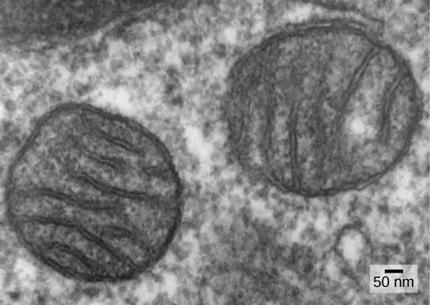
The third line of evidence comes from the production of new mitochondria. Mitochondria divide independently by a process that resembles binary fission in prokaryotes. Mitochondria arise only from previous mitochondria; they are not formed from scratch (de novo) by the eukaryotic cell. Mitochondria may fuse together; and they may be moved around inside the cell by interactions with the cytoskeleton. They reproduce within their enclosing cell and are distributed with the cytoplasm when a cell divides or two cells fuse. Therefore, although these organelles are highly integrated into the eukaryotic cell, they still reproduce as if they were independent organisms within the cell. However, their reproduction is synchronized with the activity and division of the cell. These features all support the theory that mitochondria were once free-living prokaryotes.
Some living eukaryotes are anaerobic and cannot survive in the presence of too much oxygen. However, a few appear to lack organelles that could be recognized as mitochondria. In the 1970s and on into the early 1990s, many biologists suggested that some of these eukaryotes were descended from ancestors whose lineages had diverged from the lineage of mitochondrion-containing eukaryotes before endosymbiosis occurred. Later findings suggest that reduced organelles are found in most, if not all, anaerobic eukaryotes, and that virtually all eukaryotes appear to carry some genes in their nuclei that are of mitochondrial origin.
In addition to the aerobic generation of ATP, mitochondria have several other metabolic functions. One of these functions is to generate clusters of iron and sulfur that are important cofactors of many enzymes. Such functions are often associated with the reduced mitochondrion-derived organelles of anaerobic eukaryotes. The protist Monocercomonoides, an inhabitant of vertebrate digestive tracts, appears to be an exception; it has no mitochondria and its genome contains neither genes derived from mitochondria nor nuclear genes related to mitochondrial maintenance. However, it is related to other protists with reduced mitochondria and probably represents an end-point in mitochondrial reduction. Although most biologists accept that the last common ancestor of eukaryotes had mitochondria, it appears that the complex relationship between mitochondria and their host cell continues to evolve.
Plastids¶
Some groups of eukaryotes are photosynthetic. Their cells contain, in addition to the standard eukaryotic organelles, another kind of organelle called a plastid. When such cells are carrying out photosynthesis, their plastids are rich in the pigment chlorophyll a and a range of other pigments, called accessory pigments, which are involved in harvesting energy from light. Photosynthetic plastids are called chloroplasts (Figure 23.3).
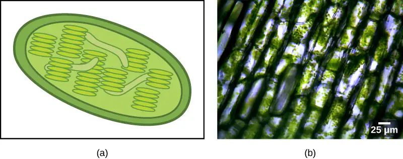
Like mitochondria, plastids appear to have an endosymbiotic origin. This hypothesis was also proposed and championed with the first direct evidence by Lynn Margulis. We now know that plastids are derived from cyanobacteria that lived inside the cells of an ancestral, aerobic, heterotrophic eukaryote. This is called primary endosymbiosis, and plastids of primary origin are surrounded by two membranes. However, the best evidence is that the acquisition of cyanobacterial endosymbionts has happened twice in the history of eukaryotes. In one case, the common ancestor of the major lineage/supergroup Archaeplastida took on a cyanobacterial endosymbiont; in the other, the ancestor of the small amoeboid rhizarian taxon, Paulinella, took on a different cyanobacterial endosymbiont. Almost all photosynthetic eukaryotes are descended from the first event, and only a couple of species are derived from the other, which in evolutionary terms, appears to be more recent.
Cyanobacteria are a group of Gram-negative bacteria with all the conventional structures of the group. However, unlike most prokaryotes, they have extensive, internal membrane-bound sacs called thylakoids. Chlorophyll is a component of these membranes, as are many of the proteins of the light reactions of photosynthesis. Cyanobacteria also have the peptidoglycan wall and lipopolysaccharide layer associated with Gram-negative bacteria.
Chloroplasts of primary endosymbiotic origin have thylakoids, a circular DNA chromosome, and ribosomes similar to those of cyanobacteria. As in mitochondria, each chloroplast is surrounded by two membranes. The outer membrane is thought to be derived from the enclosing vacuole of the host, and the inner membrane is thought to be derived from the plasma membrane of the cyanobacterial endosymbiont. In the group of Archaeplastida called the glaucophytes and in the rhizarian Paulinella, a thin peptidoglycan layer is still present between the outer and inner plastid membranes. All other plastids lack this relict of the cyanobacterial wall.
There is also, as with the case of mitochondria, strong evidence that many of the genes of the endosymbiont were transferred to the nucleus. Plastids, like mitochondria, cannot live independently outside the host. In addition, like mitochondria, plastids are derived from the division of other plastids and never built from scratch. Researchers have suggested that the endosymbiotic event that led to Archaeplastida occurred 1 to 1.5 billion years ago, at least 5 hundred million years after the fossil record suggests that eukaryotes were present.
Not all plastids in eukaryotes are derived directly from primary endosymbiosis. Some of the major groups of algae became photosynthetic by secondary endosymbiosis, that is, by taking in either green algae or red algae (both from Archaeplastida) as endosymbionts (Figure 23.4). Numerous microscopic and genetic studies have supported this conclusion. Secondary plastids are surrounded by three or more membranes, and some secondary plastids even have clear remnants of the nucleus (nucleomorphs) of endosymbiotic algae. There are even cases where tertiary or higher-order endosymbiotic events are the best explanations for the features of some eukaryotic plastids.
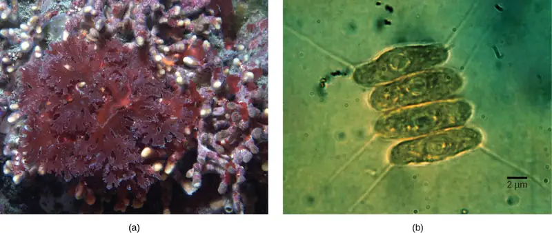
Visual Connection
![The illustration shows steps that, according to the endosymbiotic theory, gave rise to eukaryotic organisms. In step 1, infoldings in the plasma membrane of an ancestral prokaryote gave rise to endomembrane components, including a nucleus and endoplasmic reticulum. In step 2, the first endosymbiotic event occurred: The ancestral eukaryote consumed aerobic bacteria that evolved into mitochondria. The results of step 2 branch in two directions. One direction led to modern heterotrophic eukaryotes with mitochondria but no chloroplasts. The other direction led to step 3, a second endosymbiotic event, where the early eukaryote consumed photosynthetic bacteria that evolved into chloroplasts. Step 3 led to modern photosynthetic eukaryotes with both mitochondria and chloroplasts.](img/figure-23-01-04.webp)
What evidence is there that mitochondria were incorporated into the ancestral eukaryotic cell before chloroplasts?
Evolution Connection: Secondary Endosymbiosis in Chlorarachniophytes
Endosymbiosis involves one cell engulfing another to produce, over time, a coevolved relationship in which neither cell could survive alone. The chloroplasts of red and green algae, for instance, are derived from the engulfment of a photosynthetic cyanobacterium by an ancestral prokaryote.
This evidence suggests the possibility that an ancestral cell (already containing a photosynthetic endosymbiont) was engulfed by another eukaryote cell, resulting in a secondary endosymbiosis. Molecular and morphological evidence suggest that the chlorarachniophyte protists are derived from a secondary endosymbiotic event. Chlorarachniophytes are rare algae indigenous to tropical seas and sand. They are classified into the Rhizarian supergroup. Chlorarachniophytes are reticulose amoebae, extending thin cytoplasmic strands that interconnect them with other chlorarachniophytes in a cytoplasmic network. These protists are thought to have originated when a eukaryote engulfed a green alga, the latter of which had previously established an endosymbiotic relationship with a photosynthetic cyanobacterium (Figure 23.6).
![According to the secondary endosymbiosis theory, plastids in modern chlorarachniophytes arose via two endosymbiotic events. In the first event, a cyanobacterium was engulfed by a heterotrophic eukaryote. Cyanobacteria have two membranes and the endosymbiosis event gave rise to a third membrane. One of these membranes was lost. Then, in a second endosymbiotic event, the cell was engulfed by another cell. The first cell became a plastid, an organelle with a vestigial nucleus and an organelle membrane inside it; thus, the plastid has the appearance of a cell within a cell.](img/figure-b23-01-07.webp)
Several lines of evidence support that chlorarachniophytes evolved from secondary endosymbiosis. The chloroplasts contained within the green algal endosymbionts still are capable of photosynthesis, making chlorarachniophytes photosynthetic. The green algal endosymbiont also exhibits a vestigial nucleus. In fact, it appears that chlorarachniophytes are the products of an evolutionarily recent secondary endosymbiotic event. The plastids of chlorarachniophytes are surrounded by four membranes: The first two correspond to the inner and outer membranes of the photosynthetic cyanobacterium, the third corresponds to plasma membrane of the green alga, and the fourth corresponds to the vacuole that surrounded the green alga when it was engulfed by the chlorarachniophyte ancestor. In other lineages that involved secondary endosymbiosis, only three membranes can be identified around plastids. This is currently interpreted as a sequential loss of a membrane during the course of evolution.
The process of secondary endosymbiosis is not unique to chlorarachniophytes. Secondary plastids are also found in the Excavates and the Chromalveolates. In the Excavates, secondary endosymbiosis of green algae led to euglenid protists, while in the Chromalveolates, secondary endosymbiosis of red algae led to the evolution of plastids in dinoflagellates, apicomplexans, and stramenopiles.
23.2 Characteristics of Protists¶
Learning Objectives
By the end of this section, you will be able to do the following:
- Describe the cell structure characteristics of protists
- Describe the metabolic diversity of protists
- Describe the life cycle diversity of protists
There are over 100,000 described living species of protists, and it is unclear how many undescribed species may exist. Since many protists live as commensals or parasites in other organisms and these relationships are often species-specific, there is a huge potential for protist diversity that matches the diversity of their hosts. Because the name "protist" serves as a catchall term for eukaryotic organisms that are not animal, plant, or fungi, it is not surprising that very few characteristics are common to all protists. On the other hand, familiar characteristics of plants and animals are foreshadowed in various protists.
Cell Structure¶
The cells of protists are among the most elaborate of all cells. Multicellular plants, animals, and fungi are embedded among the protists in eukaryotic phylogeny. In most plants and animals and some fungi, complexity arises out of multicellularity, tissue specialization, and subsequent interaction because of these features. Although a rudimentary form of multicellularity exists among some of the organisms labelled as “protists,” those that have remained unicellular show how complexity can evolve in the absence of true multicellularity, with the differentiation of cellular morphology and function. A few protists live as colonies that behave in some ways as a group of free-living cells and in other ways as a multicellular organism. Some protists are composed of enormous, multinucleate, single cells that look like amorphous blobs of slime, or in other cases, like ferns. In some species of protists, the nuclei are different sizes and have distinct roles in protist cell function.
Single protist cells range in size from less than a micrometer to three meters in length to hectares! Protist cells may be enveloped by animal-like cell membranes or plant-like cell walls. Others are encased in glassy silica-based shells or wound with pellicles of interlocking protein strips. The pellicle functions like a flexible coat of armor, preventing the protist from being torn or pierced without compromising its range of motion.
Metabolism¶
Protists exhibit many forms of nutrition and may be aerobic or anaerobic. Those that store energy by photosynthesis belong to a group of photoautotrophs and are characterized by the presence of chloroplasts. Other protists are heterotrophic and consume organic materials (such as other organisms) to obtain nutrition. Amoebas and some other heterotrophic protist species ingest particles by a process called phagocytosis, in which the cell membrane engulfs a food particle and brings it inward, pinching off an intracellular membranous sac, or vesicle, called a food vacuole (Figure 23.7). In some protists, food vacuoles can be formed anywhere on the body surface, whereas in others, they may be restricted to the base of a specialized feeding structure. The vesicle containing the ingested particle, the phagosome, then fuses with a lysosome containing hydrolytic enzymes to produce a phagolysosome, and the food particle is broken down into small molecules that can diffuse into the cytoplasm and be used in cellular metabolism. Undigested remains ultimately are expelled from the cell via exocytosis.
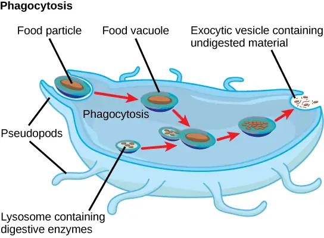
Subtypes of heterotrophs, called saprobes, absorb nutrients from dead organisms or their organic wastes. Some protists can function as mixotrophs, obtaining nutrition by photoautotrophic or heterotrophic routes, depending on whether sunlight or organic nutrients are available.
Motility¶
The majority of protists are motile, but different types of protists have evolved varied modes of movement (Figure 23.8). Some protists have one or more flagella, which they rotate or whip. Others are covered in rows or tufts of tiny cilia that they beat in a coordinated manner to swim. Still others form cytoplasmic extensions called pseudopodia anywhere on the cell, anchor the pseudopodia to a substrate, and pull themselves forward. Some protists can move toward or away from a stimulus, a movement referred to as taxis. For example, movement toward light, termed phototaxis, is accomplished by coupling their locomotion strategy with a light-sensing organ.
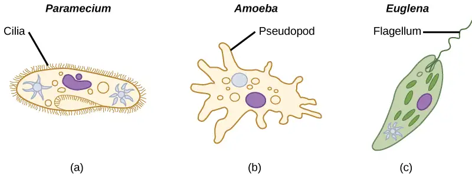
Life Cycles¶
Protists reproduce by a variety of mechanisms. Most undergo some form of asexual reproduction, such as binary fission, to produce two daughter cells. In protists, binary fission can be divided into transverse or longitudinal, depending on the axis of orientation; sometimes Paramecium exhibits this method. Some protists such as the true slime molds exhibit multiple fission and simultaneously divide into many daughter cells. Others produce tiny buds that go on to divide and grow to the size of the parental protist.
Sexual reproduction, involving meiosis and fertilization, is common among protists, and many protist species can switch from asexual to sexual reproduction when necessary. Sexual reproduction is often associated with periods when nutrients are depleted or environmental changes occur. Sexual reproduction may allow the protist to recombine genes and produce new variations of progeny, some of which may be better suited to surviving changes in a new or changing environment. However, sexual reproduction is often associated with resistant cysts that are a protective, resting stage. Depending on habitat of the species, the cysts may be particularly resistant to temperature extremes, desiccation, or low pH. This strategy allows certain protists to “wait out” stressors until their environment becomes more favorable for survival or until they are carried (such as by wind, water, or transport on a larger organism) to a different environment, because cysts exhibit virtually no cellular metabolism.
Protist life cycles range from simple to extremely elaborate. Certain parasitic protists have complicated life cycles and must infect different host species at different developmental stages to complete their life cycle. Some protists are unicellular in the haploid form and multicellular in the diploid form, a strategy employed by animals. Other protists have multicellular stages in both haploid and diploid forms, a strategy called alternation of generations, analogous to that used by plants.
Habitats¶
Nearly all protists exist in some type of aquatic environment, including freshwater and marine environments, damp soil, and even snow. Several protist species are parasites that infect animals or plants. A few protist species live on dead organisms or their wastes, and contribute to their decay.
23.3 Groups of Protists¶
Learning Objectives
By the end of this section, you will be able to do the following:
- Describe representative protist organisms from each of the six presently recognized supergroups of eukaryotes
- Identify the evolutionary relationships of plants, animals, and fungi within the six presently recognized supergroups of eukaryotes
- Identify defining features of protists in each of the six supergroups of eukaryotes.
In the span of several decades, the Kingdom Protista has been disassembled because sequence analyses have revealed new genetic (and therefore evolutionary) relationships among these eukaryotes. Moreover, protists that exhibit similar morphological features may have evolved analogous structures because of similar selective pressures—rather than because of recent common ancestry. This phenomenon, called convergent evolution, is one reason why protist classification is so challenging. The emerging classification scheme groups the entire domain Eukarya into six “supergroups” that contain all of the protists as well as animals, plants, and fungi that evolved from a common ancestor (Figure 23.9). Each of the supergroups is believed to be monophyletic, meaning that all organisms within each supergroup are believed to have evolved from a single common ancestor, and thus all members are most closely related to each other than to organisms outside that group. There is still evidence lacking for the monophyly of some groups. Each supergroup can be viewed as representing one of many variants on eukaryotic cell structure. In each group, one or more of the defining characters of the eukaryotic cell—the nucleus, the cytoskeleton, and the endosymbiotic organelles—may have diverged from the "typical" pattern.
![This image displays a proposed protist phylogeny. On the left, a common eukaryotic ancestor has one solid branch and other dotted branches connecting it to six supergroups. The solid branch leads to supergroup Archaeplastida. Within Archaeplastida, red algae branch off first, then Chlorophytes (a type of green algae), and finally Charophytes (another type of green algae) and land plants split. The first dotted branch splits into supergroups Amoebozoa and Opisthokonta. Amoebozoa includes slime molds, Gymnamoebas, and Entamoebas. Opisthokonta splits into one sub-branch containing fungi and Nucleariids, and another sub-branch containing Choanoflagellates and animals. The second dotted branch leads to supergroup Rhizaria, within which Radiolarians branch off first, and then forams and Cercozoans split. The third dotted branch leads to supergroup Chromalveolata, which is broken into two named sub-branches, the Alveolates and the Stramenopiles. Within the Alveolates sub-branch, Ciliates branch off first, then Dinoflagellates and Apicomplexans split. Within the Stramenopiles sub-branch, Oomycetes branch off first, then diatoms, golden algae, and brown algae split. The last dotted branch leads to supergroup Excavata, within which Euglenozoans branch off first, then Diplomonads and Parabasalids split.](img/figure-b23-03-01.webp)
Keep in mind that the classification scheme presented here represents just one of several hypotheses, and the true evolutionary relationships are still to be determined. The six supergroups may be modified or replaced by a more appropriate hierarchy as genetic, morphological, and ecological data accumulate. When learning about protists, it is helpful to focus less on the nomenclature and more on the commonalities and differences that illustrate how each group has exploited the possibilities of eukaryotic life.
Archaeplastida¶
Molecular evidence supports the hypothesis that all Archaeplastida are descendents of an endosymbiotic relationship between a heterotrophic protist and a cyanobacterium. The protist members of the group include the red algae and green algae. It was from a common ancestor of these protists that the land plants evolved, since their closest relatives are found in this group. The red and green algae include unicellular, multicellular, and colonial forms. A variety of algal life cycles exists, but the most complex is alternation of generations, in which both haploid and diploid stages are multicellular. A diploid sporophyte contains cells that undergo meiosis to produce haploid spores. The spores germinate and grow into a haploid gametophyte, which then makes gametes by mitosis. The gametes fuse to form a zygote that grows into a diploid sporophyte. Alternation of generations is seen in some species of Archaeplastid algae, as well as some species of Stramenopiles (Figure 23.10). In some species, the gametophyte and sporophyte look quite different, while in others they are nearly indistinguishable.
Glaucophytes¶
Glaucophytes are a small group of Archaeplastida interesting because their chloroplasts retain remnants of the peptidoglycan cell wall of the ancestral cyanobacterial endosymbiont (Figure 23.10).
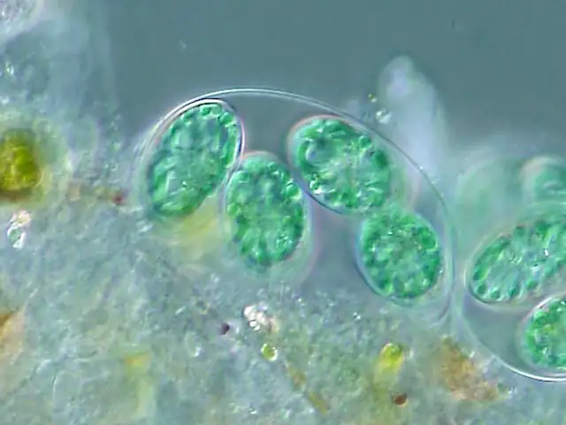
Red Algae¶
Red algae, or rhodophytes lack flagella, and are primarily multicellular, although they range in size from microscopic, unicellular protists to large, multicellular forms grouped into the informal seaweed category. Red algae have a second cell wall outside an inner cellulose cell wall. Carbohydrates in this wall are the source of agarose used for electrophoresis gels and agar for solidifying bacterial media. The "red" in the red algae comes from phycoerythrins, accessory photopigments that are red in color and obscure the green tint of chlorophyll in some species. Other protists classified as red algae lack phycoerythrins and are parasites. Both the red algae and the glaucophytes store carbohydrates in the cytoplasm rather than in the plastid. Red algae are common in tropical waters where they have been detected at depths of 260 meters. Other red algae exist in terrestrial or freshwater environments. The red algae life cycle is an unusual alternation of generations that includes two sporophyte phases, with meiosis occurring only in the second sporophyte.
Green Algae: Chlorophytes and Charophytes¶
The most abundant group of algae is the green algae. The green algae exhibit features similar to those of the land plants, particularly in terms of chloroplast structure. In both green algae and plants, carbohydrates are stored in the plastid. That this group of protists shared a relatively recent common ancestor with land plants is well supported. The green algae are subdivided into the chlorophytes and the charophytes. The charophytes are the closest living relatives to land plants and resemble them in morphology and reproductive strategies. The familiar Spirogyra is a charophyte. Charophytes are common in wet habitats, and their presence often signals a healthy ecosystem.
The chlorophytes exhibit great diversity of form and function. Chlorophytes primarily inhabit freshwater and damp soil, and are a common component of plankton. Chlamydomonas is a simple, unicellular chlorophyte with a pear-shaped morphology and two opposing, anterior flagella that guide this protist toward light sensed by its eyespot. More complex chlorophyte species exhibit haploid gametes and spores that resemble Chlamydomonas.
The chlorophyte Volvox is one of only a few examples of a colonial organism, which behaves in some ways like a collection of individual cells, but in other ways like the specialized cells of a multicellular organism (Figure 23.11). Volvox colonies contain 500 to 60,000 cells, each with two flagella, contained within a hollow, spherical matrix composed of a gelatinous glycoprotein secretion. Individual cells in a Volvox colony move in a coordinated fashion and are interconnected by cytoplasmic bridges. Only a few of the cells reproduce to create daughter colonies, an example of basic cell specialization in this organism. Daughter colonies are produced with their flagella on the inside and have to evert as they are released.
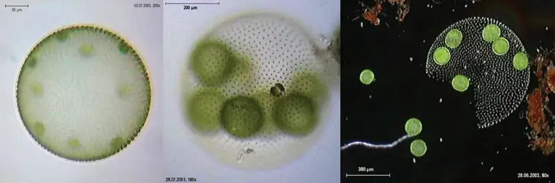
True multicellular organisms, such as the sea lettuce, Ulva, are also represented among the chlorophytes. In addition, some chlorophytes exist as large, multinucleate, single cells. Species in the genus Caulerpa exhibit flattened fern-like foliage and can reach lengths of 3 meters (Figure 23.12). Caulerpa species undergo nuclear division, but their cells do not complete cytokinesis, remaining instead as massive and elaborate single cells.
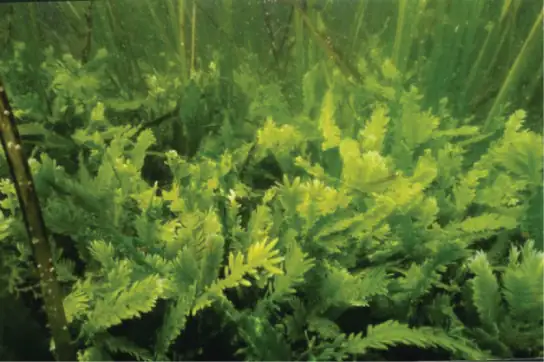
Interactive
Take a look at this video to see cytoplasmic streaming in a green alga.
chara_corallina
Amoebozoa¶
Like the Archaeplastida, the Amoebozoa include species with single cells, species with large multinucleated cells, and species that have multicellular phases. Amoebozoan cells characteristically exhibit pseudopodia that extend like tubes or flat lobes. These pseudopods project outward from anywhere on the cell surface and can anchor to a substrate. The protist then transports its cytoplasm into the pseudopod, thereby moving the entire cell. This type of motion is similar to the cytoplasmic streaming used to move organelles in the Archaeplastida, and is also used by other protists as a means of locomotion or as a method to distribute nutrients and oxygen. The Amoebozoa include both free-living and parasitic species.
Gymnomoebae¶
The Gymnamoeba or lobose amoebae include both naked amoebae like the familiar Amoeba proteus and shelled amoebae, whose bodies protrude like snails from their protective tests. Amoeba proteus is a large amoeba about 500 µm in diameter but is dwarfed by the multinucleate amoebae Pelomyxa, which can be 10 times its size. Although Pelomyxa may have hundreds of nuclei, it has lost its mitochondria, but replaced them with bacterial endosymbionts. The secondary loss or modification of mitochondria is a feature also seen in other protist groups.
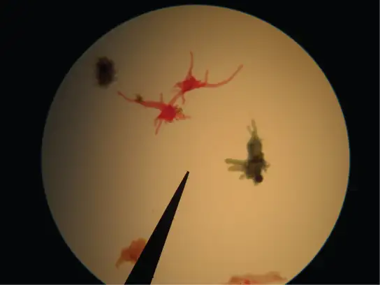
Slime Molds¶
A subset of the amoebozoans, the slime molds, has several morphological similarities to fungi that are thought to be the result of convergent evolution. For instance, during times of stress, some slime molds develop into spore-generating fruiting bodies, much like fungi.
The slime molds are categorized on the basis of their life cycles into plasmodial or cellular types. Plasmodial slime molds are composed of large, multinucleate cells and move along surfaces like an amorphous blob of slime during their feeding stage (Figure 23.14). Food particles are lifted and engulfed into the slime mold as it glides along. The "dog vomit" slime mold seen in Figure 23.14 is a particularly colorful specimen and its ability to creep about might well trigger suspicion of alien invasion. Upon maturation, the plasmodium takes on a net-like appearance with the ability to form fruiting bodies, or sporangia, during times of stress. Haploid spores are produced by meiosis within the sporangia, and spores can be disseminated through the air or water to potentially land in more favorable environments. If this occurs, the spores germinate to form ameboid or flagellate haploid cells that can combine with each other and produce a diploid zygotic slime mold to complete the life cycle.
![Illustration shows the plasmodium slime mold life cycle, which begins when 1n spores germinate, giving rise to cells that can convert between amoeboid and flagellated forms. Fertilization by fusion of either cell type results in a 2n zygote. The zygote undergoes mitosis without cytokinesis, resulting in a single-celled, multinucleate mass called a plasmodium, which is visible to the naked eye. A photo inset shows that the plasmodium is bright yellow and looks like vomit. As the plasmodium matures, holes form in the center of the mass. Stalks with bulb-shaped sporangia at the top grow up from the mass. Spores are released when the sporangia burst open, completing the cycle.](img/figure-b23-03-18.webp)
The cellular slime molds function as independent amoeboid cells when nutrients are abundant. When food is depleted, cellular slime molds aggregate into a mass of cells that behaves as a single unit, called a slug. Some cells in the slug contribute to a 2–3-millimeter stalk, drying up and dying in the process. Cells atop the stalk form an asexual fruiting body that contains haploid spores (Figure 23.15). As with plasmodial slime molds, the spores are disseminated and can germinate if they land in a moist environment. One representative genus of the cellular slime molds is Dictyostelium, which commonly exists in the damp soil of forests.
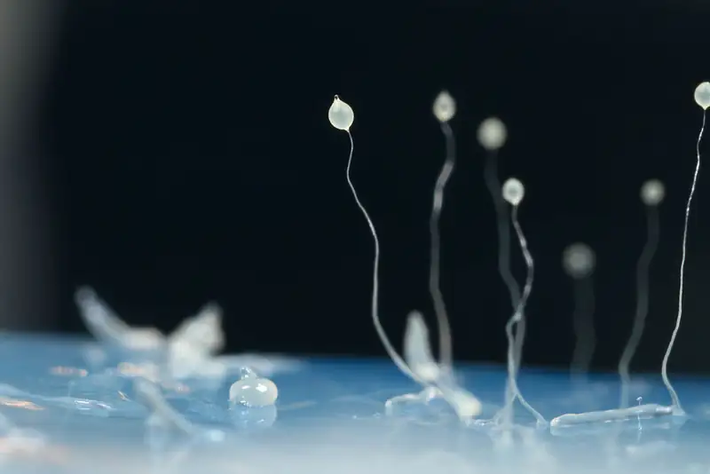
Interactive
View this video to see the formation of a fruiting body by a cellular slime mold.
slime_mold
Opisthokonta¶
The Opisthokonts are named for the single posterior flagellum seen in flagellated cells of the group. The flagella of other protists are anterior and their movement pulls the cells along, while the opisthokonts are pushed. Protist members of the opisthokonts include the animal-like choanoflagellates, which are believed to resemble the common ancestor of sponges and perhaps, all animals. Choanoflagellates include unicellular and colonial forms (Figure 23.16), and number about 244 described species. In these organisms, the single, apical flagellum is surrounded by a contractile collar composed of microvilli. The collar is used to filter and collect bacteria for ingestion by the protist. A similar feeding mechanism is seen in the collar cells of sponges, which suggests a possible connection between choanoflagellates and animals.
The Mesomycetozoa form a small group of parasites, primarily of fish, and at least one form that can parasitize humans. Their life cycles are poorly understood. These organisms are of special interest, because they appear to be so closely related to animals. In the past, they were grouped with fungi and other protists based on their morphology.
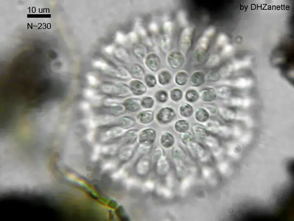
The previous supergroups are all the products of primary endosymbiontic events and their organelles—nucleus, mitochondria, and chloroplasts—are what would be considered "typical," i.e., matching the diagrams you would find in an introductory biology book. The next three supergroups all contain at least some photosynthetic members whose chloroplasts were derived by secondary endosymbiosis. They also show some interesting variations in nuclear structure, and modification of mitochondria or chloroplasts.
Rhizaria¶
The Rhizaria supergroup includes many of the amoebas with thin threadlike, needle-like or root-like pseudopodia (Figure 23.17), rather than the broader lobed pseudopodia of the Amoebozoa. Many rhizarians make elaborate and beautiful tests—armor-like coverings for the body of the cell—composed of calcium carbonate, silicon, or strontium salts. Rhizarians have important roles in both carbon and nitrogen cycles. When rhizarians die, and their tests sink into deep water, the carbonates are out of reach of most decomposers, locking carbon dioxide away from the atmosphere. In general, this process by which carbon is transported deep into the ocean is described as the biological carbon pump, because carbon is “pumped” to the ocean depths where it is inaccessible to the atmosphere as carbon dioxide. The biological carbon pump is a crucial component of the carbon cycle that maintains lower atmospheric carbon dioxide levels. Foraminiferans are unusual in that they are the only eukaryotes known to participate in the nitrogen cycle by denitrification, an activity usually served only by prokaryotes.
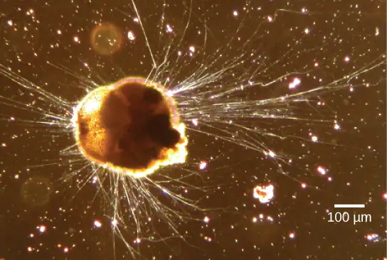
Foraminiferans¶
Foraminiferans, or forams, are unicellular heterotrophic protists, ranging from approximately 20 micrometers to several centimeters in length, and occasionally resembling tiny snails (Figure 23.18). As a group, the forams exhibit porous shells, called tests that are built from various organic materials and typically hardened with calcium carbonate. The tests may house photosynthetic algae, which the forams can harvest for nutrition. Foram pseudopodia extend through the pores and allow the forams to move, feed, and gather additional building materials. Typically, forams are associated with sand or other particles in marine or freshwater habitats. Foraminiferans are also useful as indicators of pollution and changes in global weather patterns.
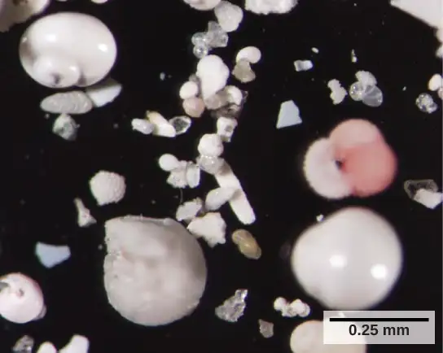
Radiolarians¶
A second subtype of Rhizaria, the radiolarians, exhibit intricate exteriors of glassy silica with radial or bilateral symmetry (Figure 23.19). Needle-like pseudopods supported by microtubules radiate outward from the cell bodies of these protists and function to catch food particles. The shells of dead radiolarians sink to the ocean floor, where they may accumulate in 100 meter-thick depths. Preserved, sedimented radiolarians are very common in the fossil record.
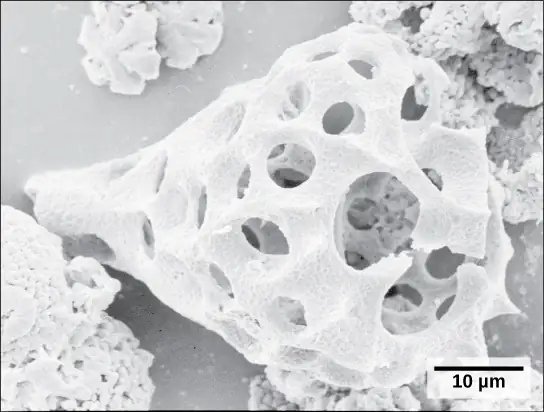
Cercozoa¶
The Cercozoa are both morphologically and metabolically diverse, and include both naked and shelled forms. The Chlorarachniophytes (Figure 23.20) are photosynthetic, having acquired chloroplasts by secondary endosymbiosis. The chloroplast contains a remnant of the chlorophyte endosymbiont nucleus, sandwiched between the two sets of chloroplast membranes. Vampyrellids or "vampire amoebae," as their name suggests, obtain their nutrients by thrusting a pseudopod into the interior of other cells and sucking out their contents.
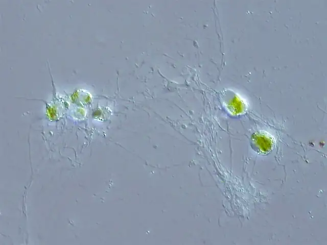
Chromalveolata¶
Current evidence suggests that species classified as chromalveolates are derived from a common ancestor that engulfed a photosynthetic red algal cell, which itself had already evolved chloroplasts from an endosymbiotic relationship with a photosynthetic prokaryote. Therefore, the ancestor of chromalveolates is believed to have resulted from a secondary endosymbiotic event. However, some chromalveolates appear to have lost red alga-derived plastid organelles or lack plastid genes altogether. Therefore, this supergroup should be considered a hypothesis-based working group that is subject to change. Chromalveolates include very important photosynthetic organisms, such as diatoms, brown algae, and significant disease agents in animals and plants. The chromalveolates can be subdivided into alveolates and stramenopiles.
Alveolates: Dinoflagellates, Apicomplexians, and Ciliates¶
A large body of data supports that the alveolates are derived from a shared common ancestor. The alveolates are named for the presence of an alveolus, or membrane-enclosed sac, beneath the cell membrane. The exact function of the alveolus is unknown, but it may be involved in osmoregulation. The alveolates are further categorized into some of the better-known protists: the dinoflagellates, the apicomplexans, and the ciliates.
Dinoflagellates exhibit extensive morphological diversity and can be photosynthetic, heterotrophic, or mixotrophic. The chloroplast of photosynthetic dinoflagellates was derived by secondary endosymbiosis of a red alga. Many dinoflagellates are encased in interlocking plates of cellulose. Two perpendicular flagella fit into the grooves between the cellulose plates, with one flagellum extending longitudinally and a second encircling the dinoflagellate (Figure 23.21). Together, the flagella contribute to the characteristic spinning motion of dinoflagellates. These protists exist in freshwater and marine habitats, and are a component of plankton, the typically microscopic organisms that drift through the water and serve as a crucial food source for larger aquatic organisms.
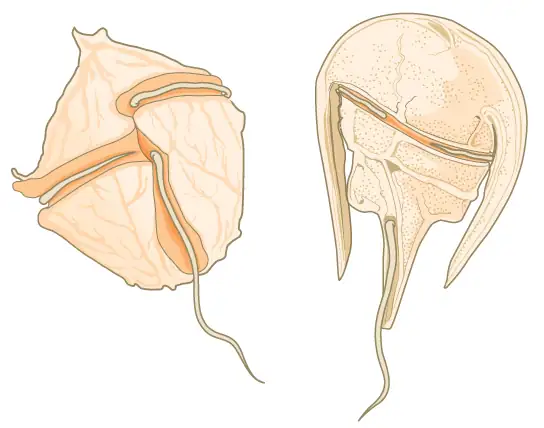
Dinoflagellates have a nuclear variant called a dinokaryon. The chromosomes in the dinokaryon are highly condensed throughout the cell cycle and do not have typical histones. Mitosis in dinoflagellates is closed, that is, the spindle separates the chromosomes from outside of the nucleus without breakdown of the nuclear envelope.
Some dinoflagellates generate light, called bioluminescence, when they are jarred or stressed. Large numbers of marine dinoflagellates (billions or trillions of cells per wave) can emit light and cause an entire breaking wave to twinkle or take on a brilliant blue color (Figure 23.22). For approximately 20 species of marine dinoflagellates, population explosions (also called blooms) during the summer months can tint the ocean with a muddy red color. This phenomenon is called a red tide, and it results from the abundant red pigments present in dinoflagellate plastids. In large quantities, these dinoflagellate species secrete an asphyxiating toxin that can kill fish, birds, and marine mammals. Red tides can be massively detrimental to commercial fisheries, and humans who consume these protists may become poisoned.
The apicomplexan protists are named for a structure called an apical complex (Figure 23.23), which appears to be a highly modified secondary chloroplast. The apicoplast genome is similar to those of dinoflagellate chloroplasts. The apical complex is specialized for entry and infection of host cells. Indeed, all apicomplexans are parasitic. This group includes the genus Plasmodium, which causes malaria in humans. Apicomplexan life cycles are complex, involving multiple hosts and stages of sexual and asexual reproduction.
![Illustration A shows an oval cell that has a narrow end and a wide end. The apical complex is located at the narrow end. The three branches of this complex narrow and join at the apical, or narrow, end of the cell. Illustration b shows the life cycle of Plasmodium, which causes malaria. The plasmodium life cycle begins when a mosquito takes a blood meal and injects Plasmodium into the bloodstream. The Plasmodium enters the liver where it multiplies, and eventually reenters the blood. In the blood it enters the ring stage, so called because the cell is curled into a ring shape. The Ring stage may multiply by mitosis or it may undergo meiosis, forming new 1n gametes of male or female sex types. When a mosquito takes a blood meal from an infected host the gametes are ingested. A smaller gamete sex type, called a microgamete, fertilizes a larger sex type, called a macrogamete, producting a 2n zygote. The zygote undergoes mitosis and differentiation. It enters the saliva where it can be injected into another host, completing the cycle.](img/figure-b23-03-05ab.webp)
The ciliates, which include Paramecium and Tetrahymena, are a group of protists 10 to 3,000 micrometers in length that are covered in rows, tufts, or spirals of tiny cilia. By beating their cilia synchronously or in waves, ciliates can coordinate directed movements and ingest food particles. Certain ciliates have fused cilia-based structures that function like paddles, funnels, or fins. Ciliates also are surrounded by a pellicle, providing protection without compromising agility. The genus Paramecium includes protists that have organized their cilia into a plate-like primitive mouth, called an oral groove, which is used to capture and digest bacteria (Figure 23.24). Food captured in the oral groove enters a food vacuole, where it combines with digestive enzymes. Waste particles are expelled by an exocytic vesicle that fuses at a specific region on the cell membrane, called the anal pore. In addition to a vacuole-based digestive system, Paramecium also uses contractile vacuoles, which are osmoregulatory vesicles that fill with water as it enters the cell by osmosis and then contract to squeeze water from the cell. Ciliates therefore exhibit considerable structural complexity without having achieved multicellularity.

Interactive
Watch the video of the contractile vacuole of Paramecium expelling water to keep the cell osmotically balanced. paramecium
Paramecium has two nuclei, a macronucleus and a micronucleus, in each cell. The micronucleus is essential for sexual reproduction, and is in many ways a typical eukaryotic nucleus, except that its genes are not transcribed. The transcribed nucleus is the macronucleus, which directs asexual binary fission and all other biological functions. The macronucleus is a multiploid nucleus constructed from the micronucleus during sexual reproduction. Periodic reconstruction of the macronucleus is necessary because the macronucleus divides amitotically, and thus becomes genetically unbalanced over a period of successive cell replications. Paramecium and most other ciliates reproduce sexually by conjugation. This process begins when two different mating types of Paramecium make physical contact and join with a cytoplasmic bridge (Figure 23.25). The diploid micronucleus in each cell then undergoes meiosis to produce four haploid micronuclei. Three of these degenerate in each cell, leaving one micronucleus that then undergoes mitosis, generating two haploid micronuclei. The cells each exchange one of these haploid nuclei and move away from each other. Fusion of the haploid micronuclei generates a completely novel diploid pre-micronucleus in each conjugative cell. This pre-micronucleus undergoes three rounds of mitosis to produce eight copies, and the original macronucleus disintegrates. Four of the eight pre-micronuclei become full-fledged micronuclei, whereas the other four perform multiple rounds of DNA replication. The copies of the micronuclear chromosomes are severely edited to form hundreds of smaller chromosomes that contain only the protein coding genes. Each of these smaller chromosomes gets new telomeres as the macronucleus differentiates. Two cycles of cell division then yield four new Paramecia from each original conjugative cell.
Visual Connection
![The illustration shows the life cycle of Paramecium. The cycle begins (step 1) when two different mating types form a cytoplasmic bridge, becoming a conjugate pair. Each Paramecium has a macronucleus and a micronucleus. The micronuclei undergo meiosis (step 2), resulting in four haploid micronuclei in each parent cell. Three of these micronuclei disintegrate. The remaining micronuclei divide once by mitosis (step 3), resulting in two micronuclei per cell. The parent cells swap one of these micronuclei (step 4). The two haploid micronuclei then fuse, forming a diploid micronucleus (step 5). The micronucleus undergoes three rounds of mitosis (step 6), resulting in eight micronuclei. The original macronucleus dissolves, and four of the micronuclei become macronuclei (step 7). Two rounds of cell division (step 8) result in four daughter cells per each parent cell, each with one macronucleus and one micronucleus.](img/figure-b23-03-07-2.webp)
Which of the following statements about Paramecium sexual reproduction is false?
- The macronuclei are derived from micronuclei.
- Both mitosis and meiosis occur during sexual reproduction.
- The conjugate pair swaps macronucleii.
- Each parent produces four daughter cells.
Stramenopiles: Diatoms, Brown Algae, Golden Algae and Oomycetes¶
The other subgroup of chromalveolates, the stramenopiles, includes photosynthetic marine algae and heterotrophic protists. The chloroplast of these algae is derived from red alga. The identifying feature of this group is the presence of a textured, or “hairy,” flagellum. Many stramenopiles also have an additional flagellum that lacks hair-like projections (Figure 23.26). Members of this subgroup range in size from single-celled diatoms to the massive and multicellular kelp.
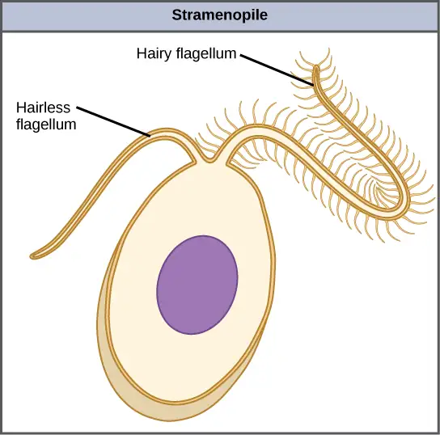
The diatoms are unicellular photosynthetic protists that encase themselves in intricately patterned, glassy cell walls composed of silicon dioxide in a matrix of organic particles (Figure 23.27). These protists are a component of freshwater and marine plankton. Most species of diatoms reproduce asexually, although some instances of sexual reproduction and sporulation also exist. Some diatoms exhibit a slit in their silica shell, called a raphe. By expelling a stream of mucopolysaccharides from the raphe, the diatom can attach to surfaces or propel itself in one direction.
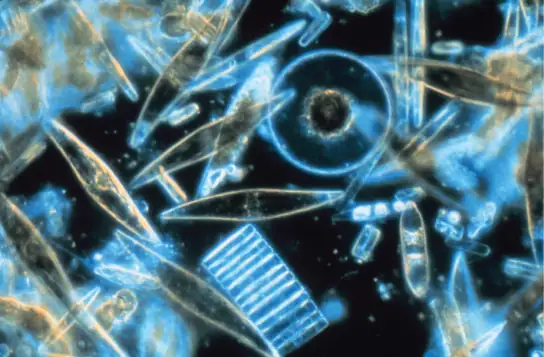
During periods of nutrient availability, diatom populations bloom to numbers greater than can be consumed by aquatic organisms. The excess diatoms die and sink to the sea floor where they are not easily reached by saprobes that feed on dead organisms. As a result, the carbon dioxide that the diatoms had consumed and incorporated into their cells during photosynthesis is not returned to the atmosphere. Along with rhizarians and other shelled protists, diatoms help to maintain a balanced carbon cycle.
Like diatoms, golden algae are largely unicellular, although some species can form large colonies. Their characteristic gold color results from their extensive use of carotenoids, a group of photosynthetic pigments that are generally yellow or orange in color. Golden algae are found in both freshwater and marine environments, where they form a major part of the plankton community.
The brown algae are primarily marine, multicellular organisms that are known colloquially as seaweeds. Giant kelps are a type of brown alga. Some brown algae have evolved specialized tissues that resemble terrestrial plants, with root-like holdfasts, stem-like stipes, and leaf-like blades that are capable of photosynthesis. The stipes of giant kelps are enormous, extending in some cases for 60 meters. Like the green algae, brown algae have a variety of life cycles, including alternation of generations. In the brown algae genus Laminaria, haploid spores develop into multicellular gametophytes, which produce haploid gametes that combine to produce diploid organisms that then become multicellular organisms with a different structure from the haploid form (Figure 23.28).
Visual Connection
![The life cycle of the brown algae, Laminaria, begins when sporangia undergo meiosis, producing 1 n zoospores. The zoospores undergo mitosis, producing multicellular male and female gametophytes. The female gametophyte produces eggs, and the male gametophyte produces sperm. The sperm fertilizes the egg, producing a 2 n zygote. The zygote undergoes mitosis, producing a multicellular sporophyte. The mature sporophyte produces sporangia, completing the cycle. A photo inset shows the sporophyte stage, which resembles a plant with long, flat blade-like leaves attached to green stalks via bladder like connections. Both the blade and stalks are submerged. Sporangia are associated with the leaf like structures.](img/figure-23-03-10.webp)
Which of the following statements about the Laminaria life cycle is false?
- 1n zoospores form in the sporangia.
- The sporophyte is the 2n plant.
- The gametophyte is diploid.
- Both the gametophyte and sporophyte stages are multicellular.
The water molds, oomycetes (“egg fungus”), were so-named based on their fungus-like morphology, but molecular data have shown that the water molds are not closely related to fungi. The oomycetes are characterized by a cellulose-based cell wall and an extensive network of filaments that allow for nutrient uptake. As diploid spores, many oomycetes have two oppositely directed flagella (one hairy and one smooth) for locomotion. The oomycetes are nonphotosynthetic and include many saprobes and parasites. The saprobes appear as white fluffy growths on dead organisms (Figure 23.29). Most oomycetes are aquatic, but some parasitize terrestrial plants. One plant pathogen is Phytophthora infestans, the causative agent of late blight of potatoes, such as occurred in the nineteenth century Irish potato famine.
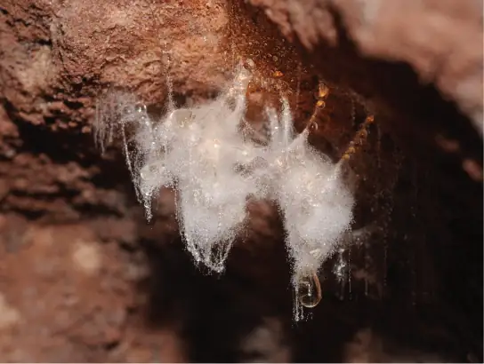
Excavata¶
Many of the protist species classified into the supergroup Excavata are asymmetrical, single-celled organisms with a feeding groove “excavated” from one side. This supergroup includes heterotrophic predators, photosynthetic species, and parasites. Its subgroups are the diplomonads, parabasalids, and euglenozoans. The group includes a variety of modified mitochondria, as well as chloroplasts derived from green algae by secondary endosymbiosis. Many of the euglenozoans are free-living, but most diplomonads and parabasalids are symbionts or parasites.
Diplomonads¶
Among the Excavata are the diplomonads, which include the intestinal parasite, Giardia lamblia (Figure 23.30). Until recently, these protists were believed to lack mitochondria. Mitochondrial remnant organelles, called mitosomes, have since been identified in diplomonads, but although these mitosomes are essentially nonfunctional as respiratory organelles, they do function in iron and sulfur metabolism. Diplomonads exist in anaerobic environments and use alternative pathways, such as glycolysis, to generate energy. Each diplomonad cell has two similar, but not identical haploid nuclei. Diplomonads have four pairs of locomotor flagella that are fairly deeply rooted in basal bodies that lie between the two nuclei.
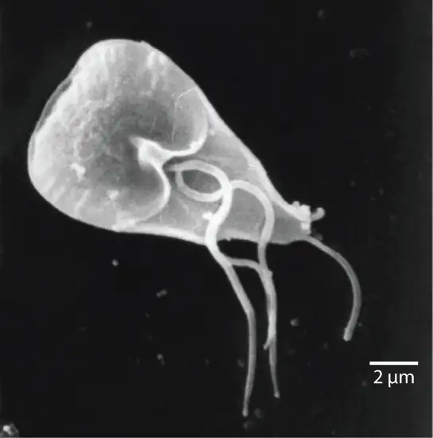
Parabasalids¶
A second Excavata subgroup, the parabasalids, are named for the parabasal apparatus, which consists of a Golgi complex associated with cytoskeletal fibers. Other cytoskeletal features include an axostyle, a bundle of fibers that runs the length of the cell and may even extend beyond it. Parabasalids move with flagella and membrane rippling, and these and other cytoskeletal modifications may assist locomotion. Like the diplomonads, the parabasalids exhibit modified mitochondria. In parabasalids these structures function anaerobically and are called hydrogenosomes because they produce hydrogen gas as a byproduct.
The parabasalid Trichomonas vaginalis causes trichomoniasis, a sexually transmitted disease in humans, which appears in an estimated 180 million cases worldwide each year. Whereas males rarely exhibit symptoms during an infection with this protist, infected females may become more susceptible to secondary infection with human immunodeficiency virus (HIV) and may be more likely to develop cervical cancer. Pregnant people infected with T. vaginalis are at an increased risk of serious complications, such as pre-term delivery.
Some of the most complex of the parabasalids are those that colonize the rumen of ruminant animals and the guts of termites. These organisms can digest cellulose, a metabolic talent that is unusual among eukaryotic cells. They have multiple flagella arranged in complex patterns and some additionally recruit spirochetes that attach to their surface to act as accessory locomotor structures.
Interactive
Termite gut endosymbionts
Termite gut endosymbionts
Euglenozoans¶
Euglenozoans includes parasites, heterotrophs, autotrophs, and mixotrophs, ranging in size from 10 to 500 µm. Euglenoids move through their aquatic habitats using two long flagella that guide them toward light sources sensed by a primitive ocular organ called an eyespot. The familiar genus, Euglena, encompasses some mixotrophic species that display a photosynthetic capability only when light is present. The chloroplast of Euglena descends from a green alga by secondary endosymbiosis. In the dark, the chloroplasts of Euglena shrink up and temporarily cease functioning, and the cells instead take up organic nutrients from their environment. Euglena has a tough pellicle composed of bands of protein attached to the cytoskeleton. The bands spiral around the cell and give Euglena its exceptional flexibility.
The human parasite, Trypanosoma brucei, belongs to a different subgroup of Euglenozoa, the kinetoplastids. The kinetoplastid subgroup is named after the kinetoplast, a large modified mitochondrion carrying multiple circular DNAs. This subgroup includes several parasites, collectively called trypanosomes, which cause devastating human diseases and infect an insect species during a portion of their life cycle. T. brucei develops in the gut of the tsetse fly after the fly bites an infected human or other mammalian host. The parasite then travels to the insect salivary glands to be transmitted to another human or other mammal when the infected tsetse fly consumes another blood meal. T. brucei is common in central Africa and is the causative agent of African sleeping sickness, a disease associated with severe chronic fatigue, coma, and can be fatal if left untreated since it leads to progressive decline of the function of the central nervous system.
![The life cycle of T brucei begins when the tsetse fly takes a blood meal from a human host, and injects the parasite into the bloodstream (step 1). T brucei multiplies by binary fission in blood, lymph and spinal fluid (step 2). When another tsetse fly bites the infected person, it takes up the pathogen (step 3), which then multiplies by binary fission in the fly's midgut (step 4). T brucei transforms into an infectious stage (step 5) and enters the salivary gland, where it multiplies (step 6). The cycle is completed when the fly takes a blood meal from another human.](img/figure-b23-03-20.webp)
Interactive
Watch this video to see T. brucei swimming. T_brucei
23.4 Ecology of Protists¶
Learning Objectives
By the end of this section, you will be able to do the following:
- Describe the role that protists play in the ecosystem
- Describe important pathogenic species of protists
Protists function in various ecological niches. Whereas some protist species are essential components of the food chain and generators of biomass, others function in the decomposition of organic materials. Still other protists are dangerous human pathogens or causative agents of devastating plant diseases.
Primary Producers/Food Sources¶
Protists are essential sources of food and provide nutrition for many other organisms. In some cases, as with zooplankton, protists are consumed directly. Alternatively, photosynthetic protists serve as producers of nutrition for other organisms. Paramecium bursaria and several other species of ciliates are mixotrophic due to a symbiotic relationship with green algae. This is a temporary version of the secondarily endosymbiotic chloroplast found in Euglena. But these symbiotic associations are not restricted to protists. For instance, photosynthetic dinoflagellates called zooxanthellae provide nutrients for the coral polyps (Figure 23.32) that house them, giving corals a boost of energy to secrete their calcium carbonate skeleton. In turn, the corals provide the protist with a protected environment and the compounds needed for photosynthesis. This type of symbiotic relationship is important in nutrient-poor environments. Without dinoflagellate symbionts, corals lose algal pigments in a process called coral bleaching, and they eventually die. This explains why reef-building corals typically do not reside in waters deeper than 20 meters: insufficient light reaches those depths for dinoflagellates to photosynthesize.
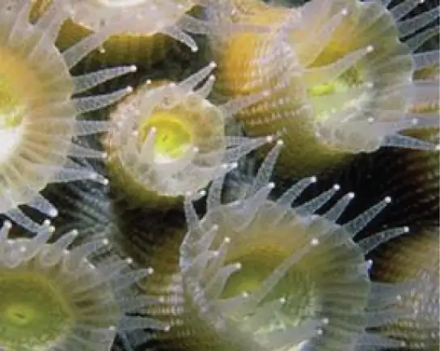
The protists and their products of photosynthesis are essential—directly or indirectly—to the survival of organisms ranging from bacteria to mammals (Figure 23.33). As primary producers, protists feed a large proportion of the world’s aquatic species. (On land, terrestrial plants serve as primary producers.) In fact, approximately 25 percent of the world’s photosynthesis is conducted by photosynthetic protists, particularly dinoflagellates, diatoms, and multicellular algae.
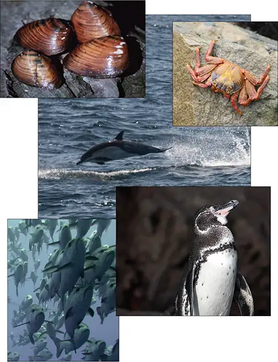
Protists do not create food sources only for sea-dwelling organisms. Recall that certain anaerobic parabasalid species exist in the digestive tracts of termites and wood-eating cockroaches, where they contribute an essential step in the digestion of cellulose ingested by these insects as they consume wood.
Human Pathogens¶
As we have seen, a pathogen is anything that causes disease. Parasitic organisms live in or on a host organism and harm the organism. A small number of protists are serious pathogenic parasites that must infect other organisms to survive and propagate. For example, protist parasites include the causative agents of malaria, African sleeping sickness, amoebic encephalitis, and waterborne gastroenteritis in humans. Other protist pathogens prey on plants, effecting massive destruction of food crops.
Plasmodium Species¶
In 2015 WHO reported over 200 million cases of malaria, mostly in Africa, South America, and southern Asia. However, it is not well known that malaria was also a prevalent and debilitating disease of the North Central region of the United States, particularly Michigan, with its thousands of lakes and numerous swamps. Prior to the civil war, and the drainage of many swamps, virtually everyone who immigrated to Michigan picked up malaria (ague as it was called in the late 1800s), and the pale, sallow, bloated faces of that period were the rule. The only healthy faces were worn by those immigrants who had just arrived. In fact, there were more deaths due to malaria in Michigan than those from the Civil War.
We now know that malaria is caused by several species of the apicomplexan protist genus Plasmodium. Members of Plasmodium must sequentially require both a mosquito and a vertebrate to complete their life cycle. In vertebrates, the parasite develops in liver cells (the exoerythrocytic stage) and goes on to infect red blood cells (the erythrocytic stage), bursting from and destroying the blood cells with each asexual replication cycle (Figure 23.34). Of the four Plasmodium species known to infect humans, P. falciparum accounts for 50 percent of all malaria cases and is the primary (and deadliest) cause of disease-related fatalities in tropical regions of the world. In 2015, it was estimated that malaria caused over 400,000 deaths, mostly in African children. During the course of malaria, P. falciparum can infect and destroy more than one-half of a human’s circulating blood cells, leading to severe anemia. In response to waste products released as the parasites burst from infected blood cells, the host immune system mounts a massive inflammatory response with episodes of delirium-inducing fever (paroxysms) as parasites lyse red blood cells, spilling parasite waste into the bloodstream. P. falciparum is transmitted to humans by the African mosquito, Anopheles gambiae. Techniques to kill, sterilize, or avoid exposure to this highly aggressive mosquito species are crucial to malaria control. Ironically, a type of genetic control has arisen in parts of the world where malaria is endemic. Possession of one copy of the HbS beta globin allele results in malaria resistance. Unfortunately, this allele also has an unfortunate second effect; when homozygous it causes sickle cell disease.
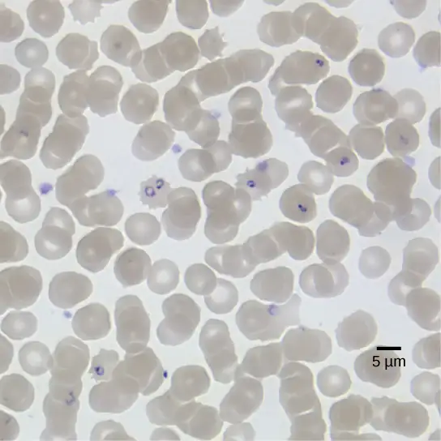
Interactive
This movie depicts the pathogenesis of Plasmodium falciparum, the causative agent of malaria.
Trypanosomes¶
Trypanosoma brucei (Figure 23.35), transmitted by tsetse flies (Glossina spp.) in Africa, and related flies in South America, is a flagellated endoparasite responsible for the deadly disease nagana in cattle and horses, and for African sleeping sickness in humans. This trypanosome confounds the human immune system by changing its thick layer of surface glycoproteins with each infectious cycle. (The glycoproteins are identified by the immune system as foreign antigens, and a specific antibody defense is mounted against the parasite.) However, T. brucei has thousands of possible antigens, and with each subsequent generation, the protist switches to a glycoprotein coating with a different molecular structure. In this way, T. brucei is capable of replicating continuously without the immune system ever succeeding in clearing the parasite. Without treatment, T. brucei attacks red blood cells, causing the patient to lapse into a coma and eventually die. During epidemic periods, mortality from the disease can be high. Greater surveillance and control measures lead to a reduction in reported cases; some of the lowest numbers reported in 50 years (fewer than 10,000 cases in all of sub-Saharan Africa) have happened since 2009.
Interactive
This movie discusses the pathogenesis of Trypanosoma brucei, the causative agent of African sleeping sickness.
In Latin America, another species of trypanosome, T. cruzi, is responsible for Chagas disease. T. cruzi infections are mainly caused by a blood-sucking “kissing bug” in the genus Triatoma. These “true bugs” bite the host during the night and then defecate on the wound, transmitting the trypanosome to the victim. The victim scratches the wound, further inoculating the site with trypanosomes at the location of the bite. After about 10 weeks, individuals enter the chronic phase but most never develop further symptoms. In about 30 percent of cases, however, the trypanosome causes further damage, especially to the heart and digestive system tissues in the chronic phase of infection, leading to malnutrition and heart failure due to abnormal heart rhythms. An estimated 10 million people are infected with Chagas disease, and it is estimated to cause 10,000-12,000 deaths per year.
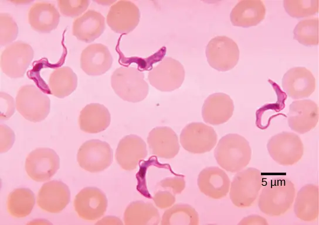
Plant Parasites¶
Protist parasites of terrestrial plants include agents that destroy food crops. The oomycete Plasmopara viticola parasitizes grape plants, causing a disease called downy mildew (Figure 23.36). Grape plants infected with P. viticola appear stunted and have discolored, withered leaves. The spread of downy mildew nearly collapsed the French wine industry in the nineteenth century.
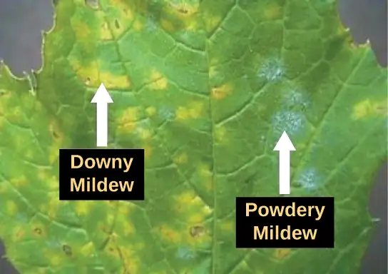
Phytophthora infestans is an oomycete responsible for potato late blight, which causes potato stalks and stems to decay into black slime (Figure 23.37). Widespread potato blight caused by P. infestans precipitated the well-known Irish potato famine in the nineteenth century that claimed the lives of approximately 1 million people and led to the emigration of at least 1 million more from Ireland. Late blight continues to plague potato crops in certain parts of the United States and Russia, wiping out as much as 70 percent of crops when no pesticides are applied.
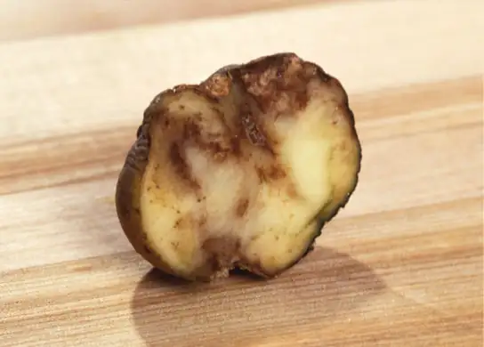
Protist Decomposers¶
The fungus-like protist saprobes are specialized to absorb nutrients from nonliving organic matter, such as dead organisms or their wastes. For instance, many types of oomycetes grow on dead animals or algae. Saprobic protists have the essential function of returning inorganic nutrients to the soil and water. This process allows for new plant growth, which in turn generates sustenance for other organisms along the food chain. Indeed, without saprobe species, such as protists, fungi, and bacteria, life would cease to exist as all organic carbon became “tied up” in dead organisms.
Chapter Review¶
Key Terms¶
- biological carbon pump
- process by which inorganic carbon is fixed by photosynthetic species that then die and fall to the sea floor where they cannot be reached by saprobes and their carbon dioxide consumption cannot be returned to the atmosphere
- bioluminescence
- generation and emission of light by an organism, as in dinoflagellates
- contractile vacuole
- vesicle that fills with water (as it enters the cell by osmosis) and then contracts to squeeze water from the cell; an osmoregulatory vesicle
- cytoplasmic streaming
- movement of cytoplasm into an extended pseudopod such that the entire cell is transported to the site of the pseudopod
- endosymbiosis
- engulfment of one cell within another such that the engulfed cell survives, and both cells benefit; the process responsible for the evolution of mitochondria and chloroplasts in eukaryotes
- endosymbiotic theory
- theory that states that eukaryotes may have been a product of one cell engulfing another, one living within another, and evolving over time until the separate cells were no longer recognizable as such
- hydrogenosome
- organelle carried by parabasalids (Excavata) that functions anaerobically and outputs hydrogen gas as a byproduct; likely evolved from mitochondria
- kinetoplast
- mass of DNA carried within the single, oversized mitochondrion, characteristic of kinetoplastids (phylum: Euglenozoa)
- mitosome
- nonfunctional organelle carried in the cells of diplomonads (Excavata) that likely evolved from a mitochondrion
- mixotroph
- organism that can obtain nutrition by autotrophic or heterotrophic means, usually facultatively
- pellicle
- outer cell covering composed of interlocking protein strips that function like a flexible coat of armor, preventing cells from being torn or pierced without compromising their range of motion
- phagolysosome
- cellular body formed by the union of a phagosome containing the ingested particle with a lysosome that contains hydrolytic enzymes
- plankton
- diverse group of mostly microscopic organisms that drift in marine and freshwater systems and serve as a food source for larger aquatic organisms
- plastid
- one of a group of related organelles in plant cells that are involved in the storage of starches, fats, proteins, and pigments
- raphe
- slit in the silica shell of diatoms through which the protist secretes a stream of mucopolysaccharides for locomotion and attachment to substrates
- test
- porous shell of a foram that is built from various organic materials and typically hardened with calcium carbonate
Summary¶
23.1 Eukaryotic Origins¶
The oldest fossil evidence of eukaryotes is about 2 billion years old. Fossils older than this all appear to be prokaryotes. It is probable that today’s eukaryotes are descended from an ancestor that had a prokaryotic organization. The last common ancestor of today’s Eukarya had several characteristics, including cells with nuclei and an endomembrane system (which includes the nuclear envelope). Its chromosomes were linear and contained DNA associated with histones. The nuclear genome seems to be descended from an archaean ancestor. This ancestor would have had a cytoskeleton and divided its chromosomes mitotically.
The ancestral cytoskeletal system included the ability to make cilia/flagella during at least part of its life cycle. It was aerobic because it had mitochondria derived from an aerobic alpha-proteobacterium that lived inside a host cell. Whether this host had a nucleus at the time of the initial symbiosis remains unknown. The last common ancestor may have had a cell wall for at least part of its life cycle, but more data are needed to confirm this hypothesis. Today’s eukaryotes are very diverse in their shapes, organization, life cycles, and number of cells per individual.
23.2 Characteristics of Protists¶
Protists are extremely diverse in terms of their biological and ecological characteristics, partly because they are an artificial assemblage of phylogenetically unrelated groups. Protists display highly varied cell structures, several types of reproductive strategies, virtually every possible type of nutrition, and varied habitats. Most single-celled protists are motile, but these organisms use diverse structures for transportation.
23.3 Groups of Protists¶
The process of classifying protists into meaningful groups is ongoing, but genetic data in the past 20 years have clarified many relationships that were previously unclear or mistaken. The majority view at present is to order all eukaryotes into six supergroups: Archaeplastida, Amoebozoa, Opisthokonta, Rhizaria, Chromalveolata, and Excavata. The goal of this classification scheme is to create clusters of species that all are derived from a common ancestor. At present, the monophyly of some of the supergroups are better supported by genetic data than others. Although tremendous variation exists within the supergroups, commonalities at the morphological, physiological, and ecological levels can be identified.
23.4 Ecology of Protists¶
Protists function at several levels of the ecological food web: as primary producers, as direct food sources, and as decomposers. In addition, many protists are parasites of plants and animals and can cause deadly human diseases or destroy valuable crops.
Visual Connection Questions¶
23.1 Eukaryotic Origins¶
1. Figure 23.5 What evidence is there that mitochondria were incorporated into the ancestral eukaryotic cell before chloroplasts?
Answer
Figure 23.5 All eukaryotic cells have mitochondria, but not all eukaryotic cells have chloroplasts.
23.3 Groups of Protists¶
2. Figure 23.25 Which of the following statements about Paramecium sexual reproduction is false?
- The macronuclei are derived from micronuclei.
- Both mitosis and meiosis occur during sexual reproduction.
- The conjugate pair swaps macronuclei.
- Each parent produces four daughter cells.
Answer
3. Figure 23.28 Which of the following statements about the Laminaria life cycle is false?
- 1n zoospores form in the sporangia.
- The sporophyte is the 2n plant.
- The gametophyte is diploid.
- Both the gametophyte and sporophyte stages are multicellular.
Answer
Review Questions¶
23.1 Eukaryotic Origins¶
4. What event is thought to have contributed to the evolution of eukaryotes?
- global warming
- glaciation
- volcanic activity
- oxygenation of the atmosphere
Answer
D
5. Which characteristic is shared by prokaryotes and eukaryotes?
- cytoskeleton
- nuclear envelope
- DNA-based genome
- mitochondria
Answer
C
6. Mitochondria most likely evolved by _____________.
- a photosynthetic cyanobacterium
- cytoskeletal elements
- endosymbiosis
- membrane proliferation
Answer
C
7. Which of these protists is believed to have evolved following a secondary endosymbiosis?
- green algae
- cyanobacteria
- red algae
- chlorarachniophytes
Answer
D
8. In 2016, scientists published the genome of Monocercomonoides, and demonstrated that this organism has no detectable mitochondrial genes. However, its genome was arranged in linear chromosomes wrapped around histones which are contained within the nucleus. Monocercomonoides is therefore a(n) _________.
- Bacteria
- Archea
- Eukaryote
- Endosymbiont
Answer
C
9. Which of the following observations about a bacterium would distinguish it from the last eukaryotic common ancestor?
- A double-stranded DNA genome
- Lack of a membrane-bound structure surrounding the genome
- Fatty acids in the lipid bilayer of the plasma membrane
- Enclosed by a cell wall
Answer
B
23.2 Characteristics of Protists¶
10. Protists that have a pellicle are surrounded by ______________.
- silica dioxide
- calcium carbonate
- carbohydrates
- proteins
Answer
D
11. Protists with the capabilities to perform photosynthesis and to absorb nutrients from dead organisms are called ______________.
- photoautotrophs
- mixotrophs
- saprobes
- heterotrophs
Answer
B
12. Which of these locomotor organs would likely be the shortest?
- a flagellum
- a cilium
- an extended pseudopod
- a pellicle
Answer
B
13. Alternation of generations describes which of the following?
- The haploid form can be multicellular; the diploid form is unicellular.
- The haploid form is unicellular; the diploid form can be multicellular.
- Both the haploid and diploid forms can be multicellular.
- Neither the haploid nor the diploid forms can be multicellular.
Answer
C
14. The amoeba E. histolytica is a pathogen that forms liver abscesses in infected individuals. Its metabolic classification is most likely ______.
- Anaerobic heterotroph
- Mixotroph
- Aerobic phototroph
- Phagocytic autotroph
Answer
A
23.3 Groups of Protists¶
15. Which protist group exhibits mitochondrial remnants with reduced functionality?
- slime molds
- diatoms
- parabasalids
- dinoflagellates
Answer
C
16. Conjugation between two Paramecia produces ________ total daughter cells.
- 2
- 4
- 8
- 16
Answer
C
17. What is the function of the raphe in diatoms?
- locomotion
- defense
- capturing food
- photosynthesis
Answer
A
18. What genus of protists appears to contradict the statement that unicellularity restricts cell size?
- Dictyostelium
- Ulva
- Plasmodium
- Caulerpa
Answer
D
19. A marine biologist analyzing water samples notices a protist with a calcium carbonate shell that moves by pseudopodia extension. The protist is likely to be closely related to which species?
- Fuligo septica (Dog Vomit slime mold)
- Circogonia icosahedra (Radiolarian)
- Euglena viridis
- Ammonia tepida
Answer
D
23.4 Ecology of Protists¶
20. An example of carbon fixation is _____________.
- photosynthesis
- decomposition
- phagocytosis
- parasitism
Answer
A
21. Which parasitic protist evades the host immune system by altering its surface proteins with each generation?
- Paramecium caudatum
- Trypanosoma brucei
- Plasmodium falciparum
- Phytophthora infestans
Answer
B
22. Which of the following is not a way that protists contribute to the food web?
- They fix carbon into organic molecules.
- They occupy the apex producer niche.
- They enter symbiotic relationships with animals.
- They recycle nutrients back into the carbon and nitrogen cycles.
Answer
B
Critical Thinking Questions¶
23.1 Eukaryotic Origins¶
23. Describe the hypothesized steps in the origin of eukaryotic cells.
Answer
Eukaryotic cells arose through endosymbiotic events that gave rise to the energy-producing organelles within the eukaryotic cells such as mitochondria and chloroplasts. The nuclear genome of eukaryotes is related most closely to the Archaea, so it may have been an early archaean that engulfed a bacterial cell that evolved into a mitochondrion. Mitochondria appear to have originated from an alpha-proteobacterium, whereas chloroplasts originated as a cyanobacterium. There is also evidence of secondary endosymbiotic events. Other cell components may also have resulted from endosymbiotic events.
24. Some aspects of eukaryotes are more similar to Archaea, while other aspects of eukaryotic cell composition appear more closely related to Bacteria. Explain how endosymbiosis could resolve this paradox.
Answer
The endosymbiotic theory proposes that one organism engulfed another, and the two co-evolved together until they could not exist independently. If a bacterium engulfed an archaeon, or vice versa, and the two developed an obligate symbiotic relationship, the resulting eukaryote thousands of years later would retain features from both original cells.
23.2 Characteristics of Protists¶
25. Explain in your own words why sexual reproduction can be useful if a protist’s environment changes.
Answer
The ability to perform sexual reproduction allows protists to recombine their genes and produce new variations of progeny that may be better suited to the new environment. In contrast, asexual reproduction generates progeny that are clones of the parent.
26. Giardia lamblia is a cyst-forming protist parasite that causes diarrhea if ingested. Given this information, against what type(s) of environments might G. lamblia cysts be particularly resistant?
Answer
As an intestinal parasite, Giardia cysts would be exposed to low pH in the stomach acids of its host. To survive this environment and reach the intestine, the cysts would have to be resistant to acidic conditions.
27. Explain how the definition of protists ensures that the kingdom Protista includes a wide diversity of cellular structures. Provide an example of two different structures that perform the same function for their respective protist.
Answer
Protists are defined as any eukaryotes that do not fall into the Plantae, Fungi, or Animal Kingdoms. Since the unifying characteristics describe what they are NOT, rather than what they are, Protista can include almost any cellular/organism organization. Possible examples of structure variety:
- Barrier to exterior world: cell wall, plasma membrane, pellicle
- Locomotion: flagella, cilia, pseudopodia
23.3 Groups of Protists¶
28. The chlorophyte (green algae) genera Ulva and Caulerpa both have macroscopic leaf-like and stem-like structures, but only Ulva species are considered truly multicellular. Explain why.
Answer
Unlike Ulva, protists in the genus Caulerpa actually are large, multinucleate, single cells. Because these organisms undergo mitosis without cytokinesis and lack cytoplasmic divisions, they cannot be considered truly multicellular.
29. Why might a light-sensing eyespot be ineffective for an obligate saprobe? Suggest an alternative organ for a saprobic protist.
Answer
By definition, an obligate saprobe lacks the ability to perform photosynthesis, so it cannot directly obtain nutrition by searching for light. Instead, a chemotactic mechanism that senses the odors released during decay might be a more effective sensing organ for a saprobe.
30. Opisthokonta includes animals and fungi, as well as protists. Describe the key feature of this phylum, and an example of how an organism in each kingdom uses this feature.
Answer
The key feature of Opisthokonts is the flagellum on the posterior end of cells.
Example organisms:
- Choanoflagellates use the flagellum for filter feeding.
- Sponges (animals) use the flagellum for filter feeding.
- Male gametes (animals) use the flagellum for locomotion.
- Fungi spores use the flagellum for locomotion.
31. Describe two ways in which paramecium differs from the projected traits of the last eukaryotic common ancestor.
Answer
Possible answers include:
- Two nuclei (a macronucleus and a micronucleus) instead of one nucleus
- Amitotic division/binary fission during asexual reproduction instead of mitotic cell division
- Mitosis of the micronucleus after meiosis instead of direct meiotic production of gametes for sexual reproduction
23.4 Ecology of Protists¶
32. How does killing Anopheles mosquitoes affect the Plasmodium protists?
Answer
Plasmodium parasites infect humans and cause malaria. However, they must complete part of their life cycle within Anopheles mosquitoes, and they can only infect humans via the bite wound of a mosquito. If the mosquito population is decreased, then fewer Plasmodium would be able to develop and infect humans, thereby reducing the incidence of human infections with this parasite.
33. Without treatment, why does African sleeping sickness invariably lead to death?
Answer
The trypanosomes that cause this disease are capable of expressing a glycoprotein coat with a different molecular structure with each generation. Because the immune system must respond to specific antigens to raise a meaningful defense, the changing nature of trypanosome antigens prevents the immune system from ever clearing this infection. Massive trypanosome infection eventually leads to host organ failure and death.
34. Describe how increasing stress to the ocean would affect a food chain containing zooxanthellae, corals, parrotfish, and sharks.
Answer
Ocean stresses, such as rising temperatures or increasing levels of pollution, cause corals to expel their zooxanthellae symbionts. This leads to coral bleaching, and death if no new zoocanthellae colonize the corals. The dying corals will decrease the food source available to parrotfish, so the parrotfish population will decline. With fewer prey animals available, the shark population in the area will also decline.
Adapted from Biology 2e by OpenStax, licensed under CC BY 4.0. Access the original for free at openstax.org. Changes: converted to the web reading format of The Open Book Project.